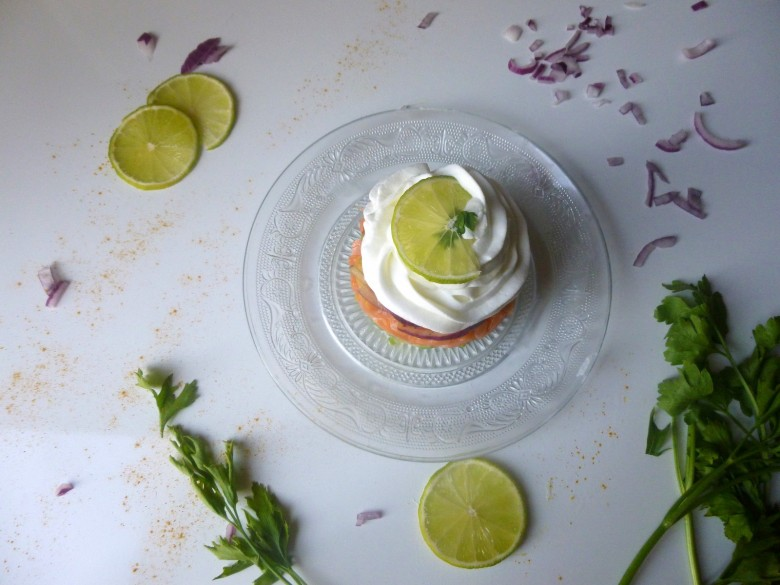

Tartare de saumon avocat et sa chantilly au citron vert

Envie d’une entrée légère et rafraîchissante? Le tartare de saumon c’est par ici —>
En ce premier jour d’été quoi de mieux que de vous présenter une petite entrée rafraîchissante et pleine de légèreté.
L’alliance du saumon et de l’avocat est un grand classique et surmonté de sa chantilly au citron vert cette entrée est une valeur sûre pour cet été !
Ingrédients
- saumon - 600g
- oignon rouge - 1
- avocat - 2
- citron vert - 2
- Huile d'olive - 3 càs
- ciboulette
- crème fleurette entière - 25 cl
- citron vert - 1
Instructions
- Nettoyer le saumon, enlever la peau et retirer toutes les arrêtes
- Le découper en tout petits carrées. Réserver
- Couper les avocats en petits morceaux. Réserver
- Dans une jatte , mettre le jus de deux citrons vert, un oignon rouge coupé en petits morceaux, la ciboulette ciselée et l'huile d'olive
- Ajouter le saumon au mélange précédent et laisser mariner afin que le saumon s’imprègne de la sauce (2 bonnes heures)
- Dans une assiette poser un cercle à entremet de 8cm de diamètre et y déposer des petits morceaux d'avocats Par dessus déposer du saumon mariné et bien tasser avec le dos d'une cuillère
- Monter la crème chantilly : dans le bol de votre robot battre la crème à vitesse moyenne et y ajouter le jus d'un citron pressé
- Démouler le tartare et à l'aide d'une douille déposer de la chantilly
- Servir immédiatement ou réserver au réfrigérateur pour le moment voulu

Les tips de la communauté
8 commentaires
Tartare apprécié pour son côté élégant et sa présentation. Les commentaires sont brefs mais positifs de la part des lecteurs qui aiment ce type d'entrée.